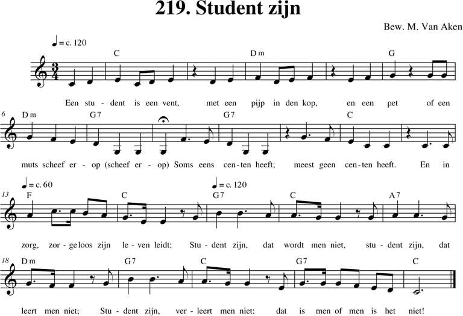
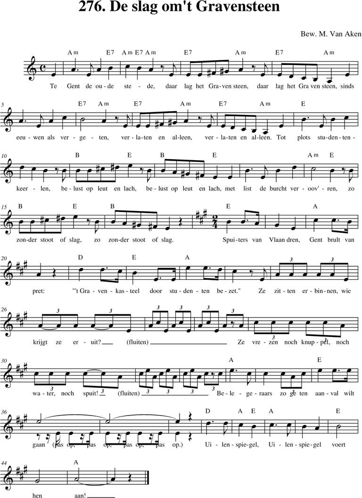
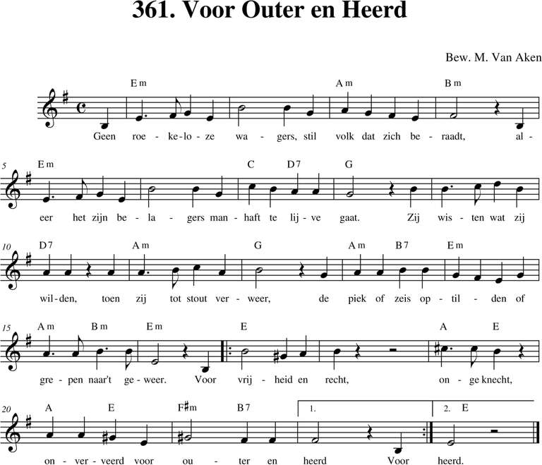
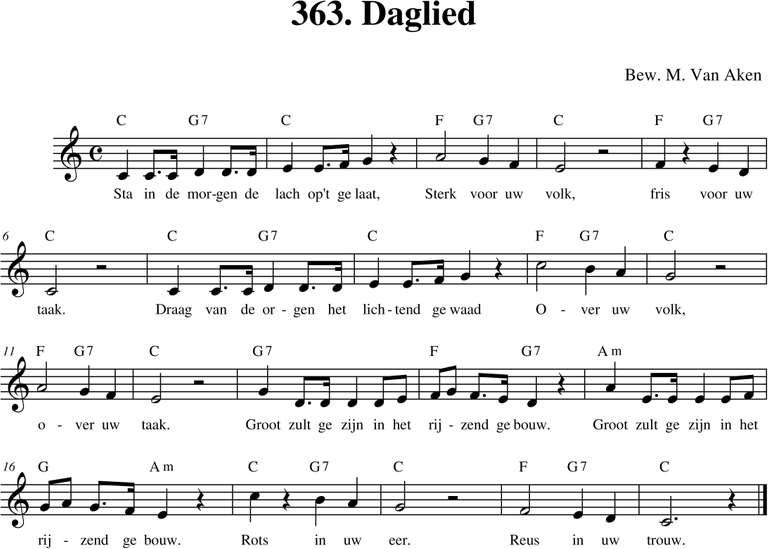

Menu
Bladeren
Alle liederen
p. 1-99
p. 100-199
p. 200-299
p. 300-399
p. 400-499
p. 500 e.v.
Taal
Nederlands
Frans
Engels
Duits
Latijn
Zuid-Afrikaans
Personen
Albrecht Rodenbach
Armand Preud'homme
Emiel Hullebroeck
Eugeen De Ridder
Jozef Simons
Philipp Silcher
René De Clercq
Stephen Foster
Meer...
Thema
Clubliederen
Ceremonies
Studentenleven
Historiek
Volk en land
Verleden
Bezinning
Were di
Pintjedrinken
Minne
Stemming en luim
NIEUWS
Preud´homme Armand (1904-1986)
(20)

219. Student zijn
12/12/2018
236. Ik drink
12/12/2018

276. De slag om het Gravensteen
12/12/2018
306. O mijn Kempen
12/12/2018
307. Kempenland
12/12/2018
309. Heimwee doet ons hart verlangen
30/12/2018
317. Naar wat de dennen fluist´ren
12/12/2018
360. Het leger uit Kerlingaland
10/03/2019

361. Voor Outer en Heerd
12/12/2018
362. De landsknechttrommen dreunen
12/12/2018

363. Daglied
12/12/2018
Volgende